AI Builders Survey 2025: What Five Years of Teaching Kids to Build Good AI Looks Like
ai-builders
education
survey
Author
cstorm125
Published
July 21, 2025
AI Builders is a 10-week, online program that teaches middle-to-high school students in Thailand to create an ML project they can be proud of. Every year, we select 40-60 students from 500+ applicants to participate in our intensive project development regimen. We start off with an orientation session and ice-breaking in the first week. Then, students are divided into 10-12 groups of 4-6 people with a mentor and teaching assistant responsbile. Each week, they learn from an online lesson, including videos and notebooks, and apply those freshly learned skills to work on their capstone project. At 7pm every Wednesday, students attend a one-to-two-hour long session with their mentors and teaching assistants to consult on the progress of their projects. Repeat this for 8 weeks and in the last week we score them according to problem statement (15), metrics and baselines (15), data collection and cleaning (15), exploratory data analysis (20), modeling and error analysis (20), and deployment (15). Students need to score at least 70 points overall and not a single zero-scored criterion to pass.
As we reach our half-decade milestone, we would like to shed some lights on our students based on both our student roster (their performance during the program) and a survey distributed in July, 2025 (their performance after the program).
Code
import logginglogging.getLogger('matplotlib.font_manager').setLevel(logging.ERROR)survey_fname ='/Users/charipol/Work/admin/data/student_survey/aib2025_student_survey.csv'roster_fname ='/Users/charipol/Work/admin/data/student_roster/aib2025_student_roster_master.csv'import pandas as pdimport numpy as npfrom scipy import statsfrom scipy import statsfrom statsmodels.stats.power import NormalIndPowerfrom plotnine import*from mizani.formatters import*from itertools import productdef proportion_z_test(x1, n1, x2, n2, effect_size_alt=None, alpha=0.05, alternative='two-sided'):""" Performs a Z-test for the difference between two population proportions and calculates the statistical power of the test if an effect size is provided. Args: x1 (int): Number of positives (successes) in sample 1. n1 (int): Total number of samples (trials) in group 1. x2 (int): Number of positives (successes) in sample 2. n2 (int): Total number of samples (trials) in group 2. effect_size_alt (float, optional): Directly specifies the effect size (Cohen's h) for power calculation. If None, power is not calculated. alpha (float, optional): Significance level (Type I error rate) for power calculation. Defaults to 0.05. alternative (str, optional): Defines the alternative hypothesis for both the Z-test and power calculation. Can be 'two-sided', 'less', or 'greater'. Defaults to 'two-sided'. Returns: tuple: A tuple containing: - z_statistic (float): The calculated Z-statistic. - p_value (float): The p-value corresponding to the chosen alternative. - power (float or None): The calculated statistical power. None if effect_size_alt is not provided, or if calculation isn't possible. """# Validate alternative argumentif alternative notin ['two-sided', 'less', 'greater']:raiseValueError("alternative must be 'two-sided', 'less', or 'greater'")# Calculate sample proportions p1_hat = x1 / n1 p2_hat = x2 / n2# Calculate the pooled proportion p_pooled = (x1 + x2) / (n1 + n2)# Calculate the standard error of the differencetry:if p_pooled ==0or p_pooled ==1: se_difference =0.0else: se_difference = np.sqrt(p_pooled * (1- p_pooled) * (1/n1 +1/n2))exceptZeroDivisionError:return np.nan, np.nan, np.nanif se_difference ==0:return np.nan, np.nan, np.nan# Calculate the Z-statistic z_statistic = (p1_hat - p2_hat) / se_difference# Calculate the p-value based on the alternative hypothesisif alternative =='two-sided': p_value =2* (1- stats.norm.cdf(abs(z_statistic)))elif alternative =='greater': p_value =1- stats.norm.cdf(z_statistic)elif alternative =='less': p_value = stats.norm.cdf(z_statistic)# Calculate power if an effect size is provided power =Noneif effect_size_alt isnotNone:try:# Use NormalIndPower for power calculation of Z-tests power_calculator = NormalIndPower() power = power_calculator.solve_power( effect_size=effect_size_alt, # Directly use the provided effect_size_alt nobs1=n1, alpha=alpha, power=None, # We want to solve for power ratio=n2/n1, # Ratio of sample sizes (n2 / n1) alternative=alternative # Use the chosen alternative for power calc )exceptExceptionas e:print(f"Warning: Could not calculate power. Error: {e}") power = np.nanreturn z_statistic, p_value, powerroster_df = pd.read_csv(roster_fname)survey_df = pd.read_csv(survey_fname)
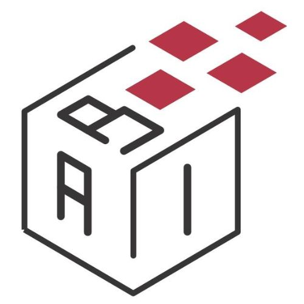
featured_image
What We Learned from Our Student Roster
From 2021 to 2025, AI Builders had 214 students attended the program, of which 170 (79.4%) have passed our criteria and successfully graduated.
Study Level
When we started the official AI Builders in 2021, we expected high school students to be our target audience but a not-so-small portion (about 10%) of students turn out to be middle schoolers and below (our very first Judge’s Award was to GemmyTheGeek, a sixth grader at the time).
Code
#study level d = roster_df.study_level.value_counts(normalize=True).reset_index()d['study_level'] = d['study_level'].astype(int)g = (ggplot(d, aes(x='study_level', y='proportion'))+ geom_col(fill='darkred')+ geom_text( aes(label=after_stat('y * 100')), # Label the actual percentage value nudge_y=0.0001, # Adjust this value to move labels slightly above the bars va='bottom', # Vertical alignment: 'bottom' places text just above the 'y' coordinate format_string='{:.1f}%'# Format to one decimal place and add '%' )+ xlab('Secondary School Grade') + ylab('Percentage of Students') + ggtitle('Secondary Grades When Starting Program')+ scale_y_continuous(labels=percent_format())+ scale_x_continuous(breaks = [i for i inrange(1,7)])+ theme_xkcd() )g
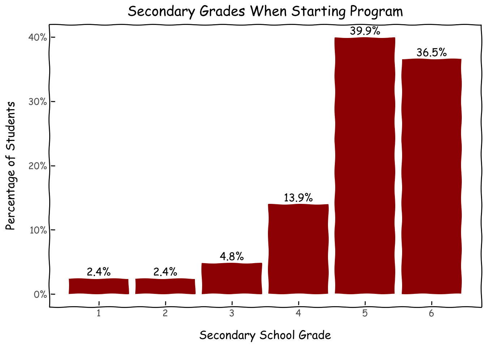
Location
Spring of 2021 was an unusual time where physically organizing a summer school was out-of-question. We took a conscious decision to make AI Builders 100% online in order to accommodate students outside of Bangkok Metropolitan Area (Bangkok, Nonthaburi, Nakhon Pathom, Pathum Thani, Samut Prakarn, and Samut Sakorn). As of the 2019 census, Bangkok Metropolian Area is over six times larger than the second-largest city Nakhon Ratchasima. This primate city issue represents uneven distribution of resources especially in education.
Code
#bangkok vs non-bangkokgreater_bangkok = ['กรุงเทพมหานคร','นนทบุรี','นครปฐม','ปทุมธานี','สมุทรปราการ','สมุทรสาคร']roster_df['province_grouped'] = roster_df.province.map(lambda x: 'กรุงเทพฯและปริมณฑล'if x in greater_bangkok else x)roster_df['is_greater_bangkok'] = roster_df.province_grouped.map(lambda x: 1if x=='กรุงเทพฯและปริมณฑล'else0)d = roster_df.province_grouped.value_counts(normalize=True).reset_index()
The online format has allowed 38.3% of students to join from non-Bangkok provinces (see full list in Appendix), a feat that would not have been possible with offline format and our limited resources.
However, we found a statistically significant lower pass rate for non-Bangkok students. This points towards room for growth in terms of supporting students outside of Bangkok Metropolitan Area.
Code
#discrepancies in pass rate by locationd = roster_df.groupby('is_greater_bangkok').agg({'student_name': ['count'],'passed': ['sum'],}).reset_index()d.columns = ['is_greater_bangkok','nb_student','nb_passed']#,'pct_passed']d_m = d.melt(id_vars='is_greater_bangkok')d_m.columns = ['is_greater_bangkok','Pass/Total','value']d_m['is_greater_bangkok'] = d_m['is_greater_bangkok'].map(lambda x: 'Bangkok Metropolitan'if x==1else'Other Provinces')d_m['Pass/Total'] = d_m['Pass/Total'].map(lambda x: 'Passed'if x=='nb_passed'else'Total')p = roster_df.groupby('is_greater_bangkok').passed.mean().reset_index()p['is_greater_bangkok'] = p['is_greater_bangkok'].map(lambda x: 'Bangkok Metropolitan'if x==1else'Other Provinces')p.columns = ['is_greater_bangkok','pass_rate']d_m_merged = pd.merge(d_m, p, on='is_greater_bangkok', how='left')#hypothesis test for pass rate among bangkok vs non-bangkok; lacking quite a bit of powerz,p_value,power = proportion_z_test(x1=64,n1=89,x2=107,n2=125, effect_size_alt=0.1, alpha=0.05, alternative='two-sided')z,p_value,powerg = (ggplot(d_m_merged, aes(x='is_greater_bangkok', y='value', fill='Pass/Total'))+ geom_col(position='dodge')+ geom_text( d_m_merged[d_m_merged['Pass/Total'] =='Passed'], aes(x='is_greater_bangkok', y='value', label='pass_rate * 100'), nudge_y=1, va='bottom', format_string='{:.1f}%',)+ xlab('Location') + ylab('Number of Students')+ ggtitle(f'Students from Bangkok Metro Have Higher Pass Rate \n p-value = {p_value:.3f}; power = {100*power:.1f}%')+ scale_fill_manual(values={'Passed':'darkred', 'Total':'grey'})+ theme_xkcd() )g
Similar to overall trends in STEM, biologically female students are a minority in our program at 22.4%. Nonetheless, we see a clear upward trend in participation over the last 5 years.
Code
g = (ggplot(d, aes(x='class_of', y='pct_f'))+geom_point()+ geom_text( aes(label='pct_f'), # Map the 'percentage_label' column to the label aesthetic format_string='{:.1%}', # Format it as a percentage with one decimal place nudge_y=0.02, # Nudge labels slightly above points (adjust as needed) va='bottom', # Vertical alignment to place text above the point # Adjust font size show_legend=False# Often you don't need a legend for these labels )+ geom_smooth(method='glm', se=True, color='darkred', linetype='dashed')+ scale_y_continuous(labels=percent_format())+ xlab('Class of') + ylab('% Biological Female') + ggtitle('Biological Female Students on The Rise')+ theme_xkcd() )g
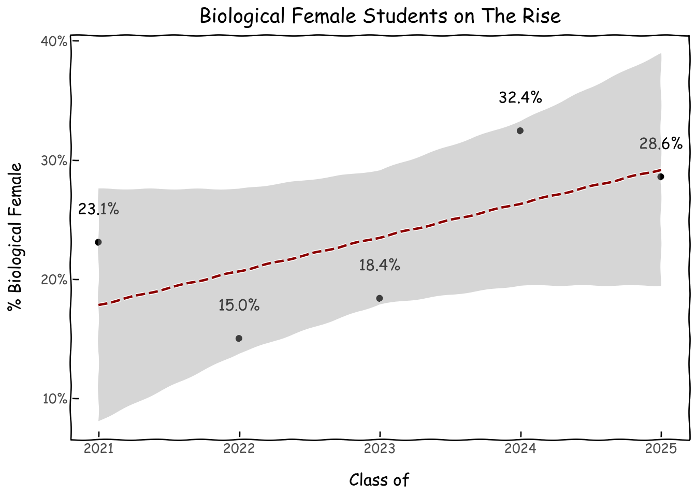
Moreover, unlike the Bangkok-vs-non-Bangkok situation, there is no statistically significant difference in pass rates among biologically male and female students. Once we get them into the program, they perform equally. The challenge is how to get more biologically female students into it.
Code
#discrepancies in pass rate by locationd = roster_df.groupby('is_biological_female').agg({'student_name': ['count'],'passed': ['sum'],}).reset_index()d.columns = ['is_biological_female','nb_student','nb_passed']#,'pct_passed']d_m = d.melt(id_vars='is_biological_female')d_m.columns = ['is_biological_female','Pass/Total','value']d_m['is_biological_female'] = d_m['is_biological_female'].map(lambda x: 'F'if x==1else'M')d_m['Pass/Total'] = d_m['Pass/Total'].map(lambda x: 'Passed'if x=='nb_passed'else'Total')p = roster_df.groupby('is_biological_female').passed.mean().reset_index()p['is_biological_female'] = p['is_biological_female'].map(lambda x: 'F'if x==1else'M')p.columns = ['is_biological_female','pass_rate']d_m_merged = pd.merge(d_m, p, on='is_biological_female', how='left')#hypothesis test for pass rate among sexes; lacking quite a bit of powerz,p_value,power = proportion_z_test(x1=134,n1=166,x2=37,n2=48, effect_size_alt=0.1, alpha=0.05, alternative='two-sided')g = (ggplot(d_m_merged, aes(x='is_biological_female', y='value', fill='Pass/Total'))+ geom_col(position='dodge')+ geom_text( d_m_merged[d_m_merged['Pass/Total'] =='Passed'], aes(x='is_biological_female', y='value', label='pass_rate * 100'), nudge_y=1, va='bottom', format_string='{:.1f}%',)+ xlab('Biological Sex') + ylab('Number of Students')+ ggtitle(f'No Pass Rate Difference between Biological Sexes \n p-value = {p_value:.3f}; power = {100*power:.1f}%')+ scale_fill_manual(values={'Passed':'darkred', 'Total':'grey'})+ theme_xkcd() )g
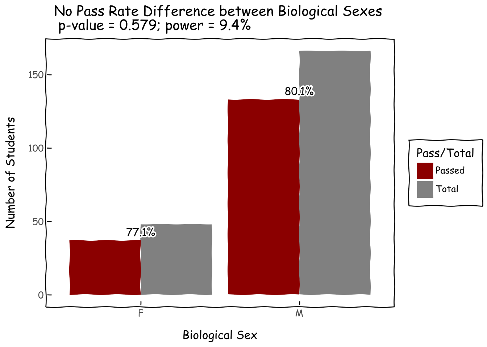
Project Themes and Data Types
Let us look into what students like to build the most. Top three most popular combinations are medical imaging, literature mostly in Thai, and music. Other archetypes worth mentioning are hand sign projects (under acessibility/images), many types of secruity projects from fraud detection to hacking, education, and entertainment. These seem to be topics closest to the hearts and minds of middle-to-high schoolers.
Code
all_combination =list(product(roster_df.theme.unique(), roster_df.main_data_type.unique()))combined_df = pd.DataFrame(all_combination, columns=['theme', 'main_data_type'])combination_with_count = roster_df.groupby(['theme', 'main_data_type']).size().reset_index(name='count')combined_df = combined_df[(~combined_df.theme.isna())&(~combined_df.main_data_type.isna())]heatmap_data = combined_df.merge(combination_with_count, on=['theme', 'main_data_type'], how='left')heatmap_data['count'] = heatmap_data['count'].fillna(0).astype(int)g = ( ggplot(heatmap_data, aes(x='theme', y='main_data_type', fill='count'))+ geom_tile(aes(width=0.9, height=0.9), color="white") # Add white borders for separation# Thickness of the line+ geom_text(aes(label='count'), color='black', size=10) # Add count numbers+ scale_fill_gradient(low='lightyellow', high='darkred') # Choose a color scale+ labs( title='Project Themes vs Main Data Types', x='Themes', y='Main Data Types', fill='Count' )+ theme_xkcd()+ theme( axis_text_x=element_text(angle=45, hjust=1), # Rotate x-axis labels if they overlap panel_background=element_text(fill='white'), # Set background to white plot_background=element_text(fill='white') ))g
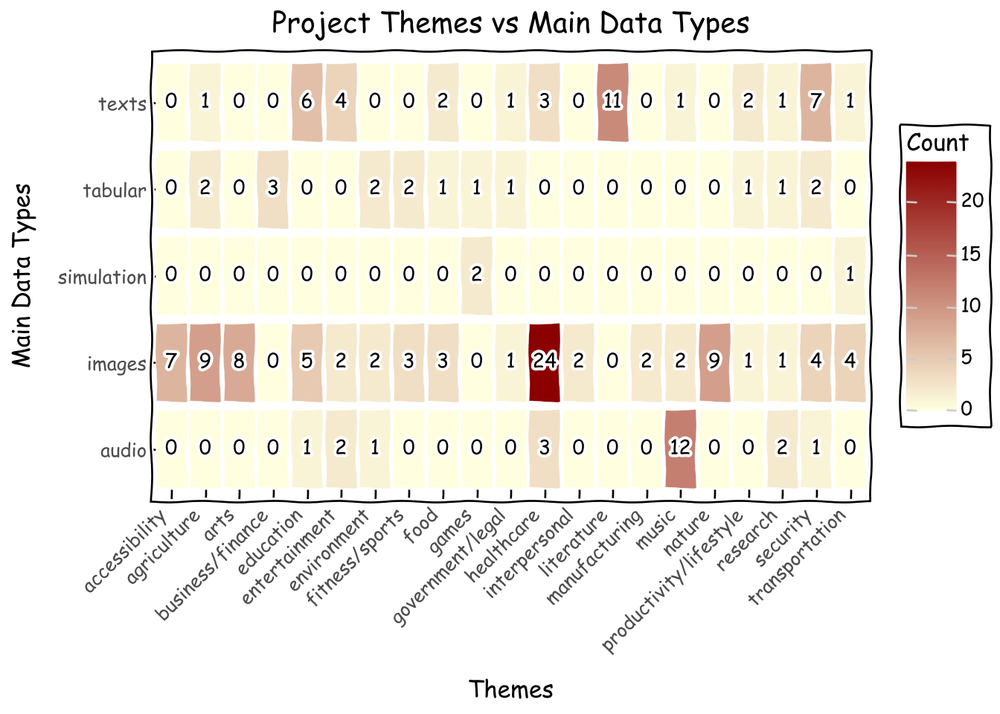
Strong interests in healthcare could stem from the cultural expectation that well-performing students would go on to medical school (more on this later). Considering the popularity of music projects despite our curriculumn not containing an audio track, we will create one starting in 2026.
Code
d = roster_df.theme.value_counts().reset_index()\ .sort_values('count',ascending=False).reset_index()d['theme'] = pd.Categorical(d['theme'], categories=d['theme'], ordered=True)g = (ggplot(d, aes(x='theme', y='count',label='count'))+ geom_col(fill='darkred')+ geom_text( nudge_y=0.0001, # Adjust this value to move labels slightly above the bars va='bottom', # Vertical alignment: 'bottom' places text just above the 'y' coordinate )+ xlab('Project Themes') + ylab('Number of Projects') + ggtitle('Project Theme Ranking')+ theme_xkcd()+ theme(axis_text_x=element_text(angle=45, hjust=1))+ scale_y_continuous(limits=(0,32)) )g
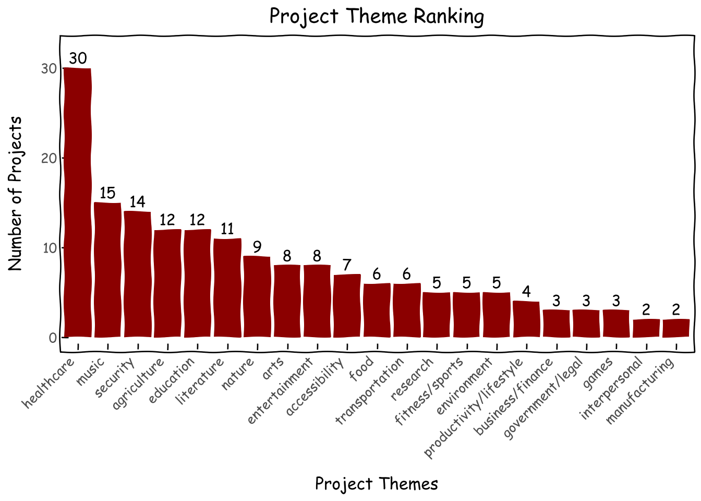
Images being the most prevalent data type is understandable since they are the most beginner-friendly when it comes to deep learning; a well-versed student can spin up an image classification project end-to-end in a few hours while it would probably take a few weeks for them to do the same for a reinforcement learning simulation. Thai being a medium-resource language and the fact that many of our mentors work on PyThaiNLP, the largest Thai language processing library, might also have inspired many Thai NLP projects.
Code
d = roster_df.main_data_type.value_counts().reset_index()\ .sort_values('count',ascending=False).reset_index()d['main_data_type'] = pd.Categorical(d['main_data_type'], categories=d['main_data_type'], ordered=True)g = (ggplot(d, aes(x='main_data_type', y='count',label='count'))+ geom_col(fill='darkred')+ geom_text( nudge_y=0.0001, # Adjust this value to move labels slightly above the bars va='bottom', # Vertical alignment: 'bottom' places text just above the 'y' coordinate )+ xlab('Project Data Types') + ylab('Number of Projects') + ggtitle('Project Data Type Ranking')+ theme_xkcd()+ theme(axis_text_x=element_text(angle=45, hjust=1))+ scale_y_continuous(limits=(0,91)) )g
This July right after AI Builders 2025 ended, we sent out a survey to all our students from 2021 to 2025 (technically also to a few students we prototyped the project on in 2020). We heard back from 72 out of 214 students (33.6%). Here are what they have to say about their lives after AI Builders.
Disclaimer: It goes without saying that there is self selection among those who responded to the survey. The result might seem “too good to be true” but we argue that even if we assume the remaining 66.4% responded in the worst way possible, our result would still look decent.
Who Answered the Survey
Understandably, response rate drops off for students from earlier class-ofs. From 70% in the current year to 30% for students 1-2 years prior and 15% for those earlier. This 15% is most likely students who have become teaching assistants in subsequent programs and kept contact in our Discord server. From 2022 onwards, almost all of our teaching assistants were program alumni.
Code
d = survey_df.class_of.value_counts(normalize=False).reset_index()d_roster = roster_df.class_of.value_counts(normalize=False).reset_index()d_combined = d.merge(d_roster, on='class_of',how='left').dropna()d_combined['response_rate'] = d_combined.count_x/d_combined.count_yg = (ggplot(d_combined, aes(x='class_of', y='response_rate'))+geom_point(color='darkred')+geom_line(color='darkred')+ geom_text( aes(label='response_rate'), # Map the 'percentage_label' column to the label aesthetic format_string='{:.1%}', # Format it as a percentage with one decimal place nudge_y=0.02, # Nudge labels slightly above points (adjust as needed) va='bottom', # Vertical alignment to place text above the point # Adjust font size show_legend=False# Often you don't need a legend for these labels )+ scale_y_continuous(labels=percent_format())+ xlab('Class of') + ylab('Response Rate') + ggtitle('Response Rate by Class-of')+ theme_xkcd() )g
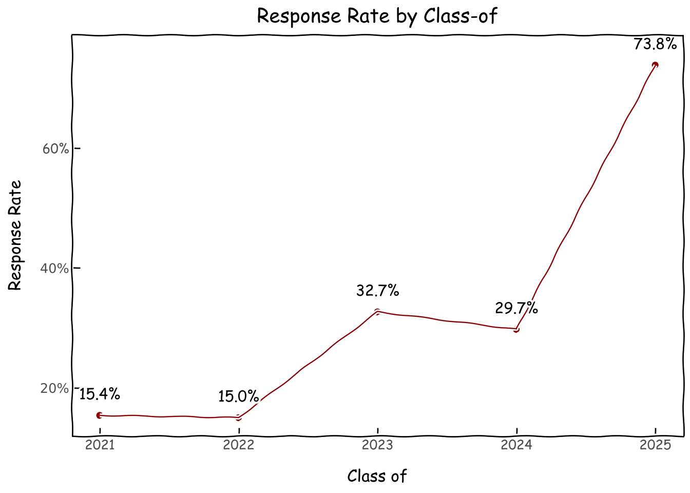
We found that respondents are similarly distributed in terms of biological sexes to the student roster. However, we have a bit of a skew towards secondary grade 6 in the survey.
Code
d_roster = roster_df.biological_sex.value_counts(normalize=True).reset_index()d_roster['source'] ='roster'd_survey = survey_df.biological_sex.value_counts(normalize=True).reset_index()d_survey['source'] ='survey'd = pd.concat([d_roster,d_survey],axis=0)d['biological_sex'] = pd.Categorical(d['biological_sex'], categories=['m','f'], ordered=True)g = (ggplot(d, aes(x='source', y='proportion', fill='biological_sex'))+ geom_col()+ geom_text( d[d.biological_sex=='f'], aes(x='source', y='proportion', label='proportion * 100'), nudge_y=0.01, va='bottom', format_string='{:.1f}%',)+ xlab('Data Source') + ylab('Percentage of Students/Survey Respondents')+ ggtitle(f'Biological Sex Distribution of Student Roster vs Survey')+ scale_y_continuous(labels=percent_format())+ scale_fill_manual(values={'f':'darkred', 'm':'darkblue'})+ theme_xkcd() )g
Unsurprisingly, a large portion of our alumni is still pre-college. However, for those who are in university, a significant portion is in computer science and engineering and almost all of them are in STEM. Anecdotally, we have heard from students that participating in AI Builders changed their educational choice towards AI-related majors.
Code
d = survey_df.major.fillna('Still Not in University').value_counts().reset_index()d['major'] = pd.Categorical(d['major'], categories=d['major'], ordered=True)g = (ggplot(d, aes(x='major', y='count',label='count'))+ geom_col(fill='darkred')+ geom_text( nudge_y=0.0001, # Adjust this value to move labels slightly above the bars va='bottom', # Vertical alignment: 'bottom' places text just above the 'y' coordinate )+ xlab('University Major') + ylab('Number of Students') + ggtitle('What Our Students Major in at University')+ theme_xkcd()+ theme(axis_text_x=element_text(angle=45, hjust=1))+ scale_y_continuous(limits=(0,30)) )g
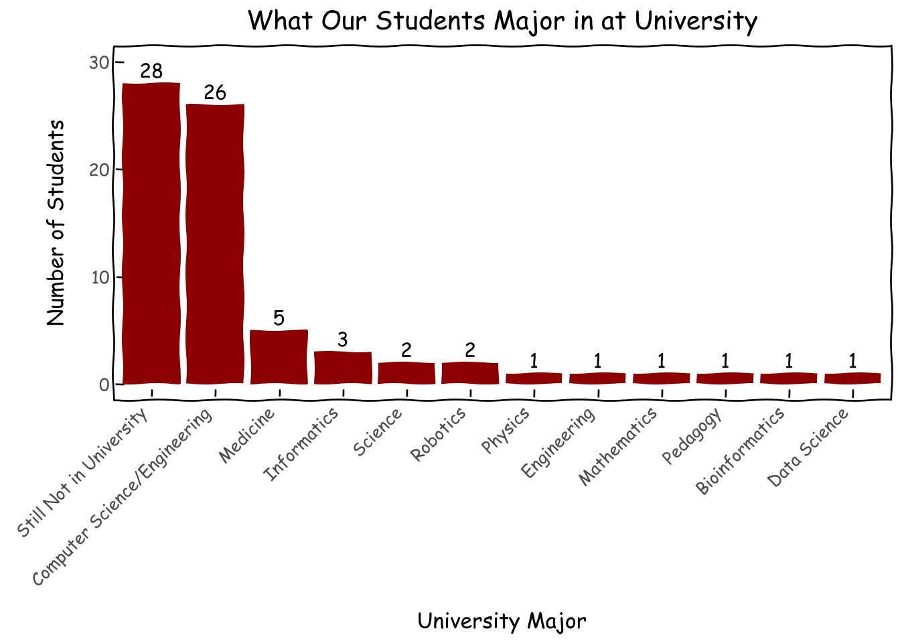
Top university choices for our students are domestic ones strong in STEM such as Chulalongkorn and KMUTT. Surprisingly, 10 out of 72 respondents pursued their higher education overseas.
Code
d = survey_df.university.fillna('Still Not in University').value_counts().reset_index()d['university'] = pd.Categorical(d['university'], categories=d['university'], ordered=True)g = (ggplot(d, aes(x='university', y='count',label='count'))+ geom_col(fill='darkred')+ geom_text( nudge_y=0.0001, # Adjust this value to move labels slightly above the bars va='bottom', # Vertical alignment: 'bottom' places text just above the 'y' coordinate )+ xlab('University') + ylab('Number of Students') + ggtitle('Where Students Go to University')+ theme_xkcd()+ theme(axis_text_x=element_text(angle=45, hjust=1))+ scale_y_continuous(limits=(0,31)) )g
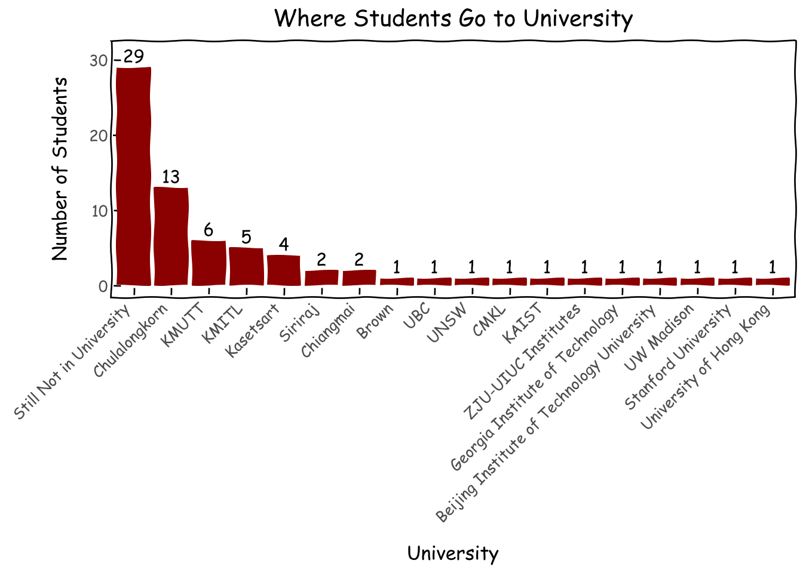
Do Students Think We Upgraded Them
We asked students if they think participating in AI Builders have improved their AI skills and expanded their networks of likeminded people, on a scale of 1-5 (1 being the worst and 5 being the best). Luckily, we seems to be thought of as effective, especially for skill improvement where all the scores are 3 and above.
Code
combi = pd.DataFrame({'skill_upgrade':[1,2,3,4,5]})d = combi.merge(survey_df.skill_upgrade.value_counts(normalize=True).reset_index(), on='skill_upgrade',how='left').fillna(0)# d['skill_upgrade'] = pd.Categorical(d['skill_upgrade'], categories=d['skill_upgrade'], ordered=True)g = (ggplot(d, aes(x='skill_upgrade', y='proportion',label='proportion'))+ geom_col(fill='darkred')+ geom_text( nudge_y=0.0001, # Adjust this value to move labels slightly above the bars va='bottom', # Vertical alignment: 'bottom' places text just above the 'y' coordinate format_string='{:.1%}', )+ xlab('1: Worse, 5: Best') + ylab('Percentage of Students') + ggtitle('Have AI Builders Helped You Improve Your AI Skills?')+ theme_xkcd()+ theme(axis_text_x=element_text(angle=45, hjust=1))+ scale_y_continuous(limits=(0,.6),labels=percent_format()) )g
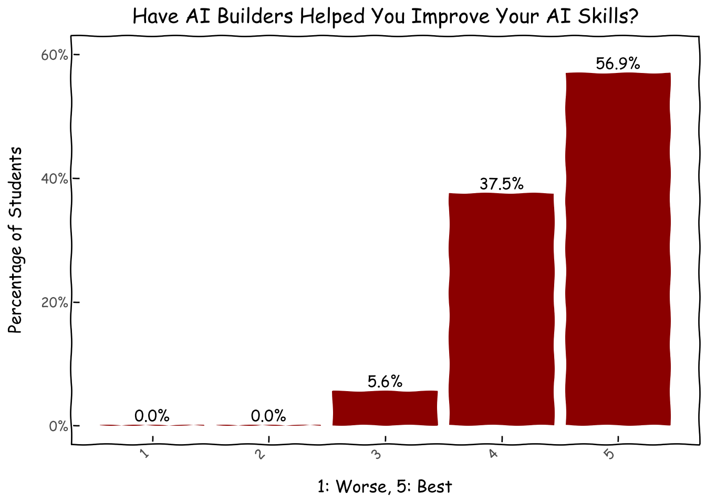
Code
combi = pd.DataFrame({'network_upgrade':[1,2,3,4,5]})d = combi.merge(survey_df.network_upgrade.value_counts(normalize=True).reset_index(), on='network_upgrade',how='left').fillna(0)g = (ggplot(d, aes(x='network_upgrade', y='proportion',label='proportion'))+ geom_col(fill='darkred')+ geom_text( nudge_y=0.0001, # Adjust this value to move labels slightly above the bars va='bottom', # Vertical alignment: 'bottom' places text just above the 'y' coordinate format_string='{:.1%}', )+ xlab('1: Worse, 5: Best') + ylab('Percentage of Students') + ggtitle('Have AI Builders Broadened Your Network?')+ theme_xkcd()+ theme(axis_text_x=element_text(angle=45, hjust=1))+ scale_y_continuous(limits=(0,.6),labels=percent_format()) )g
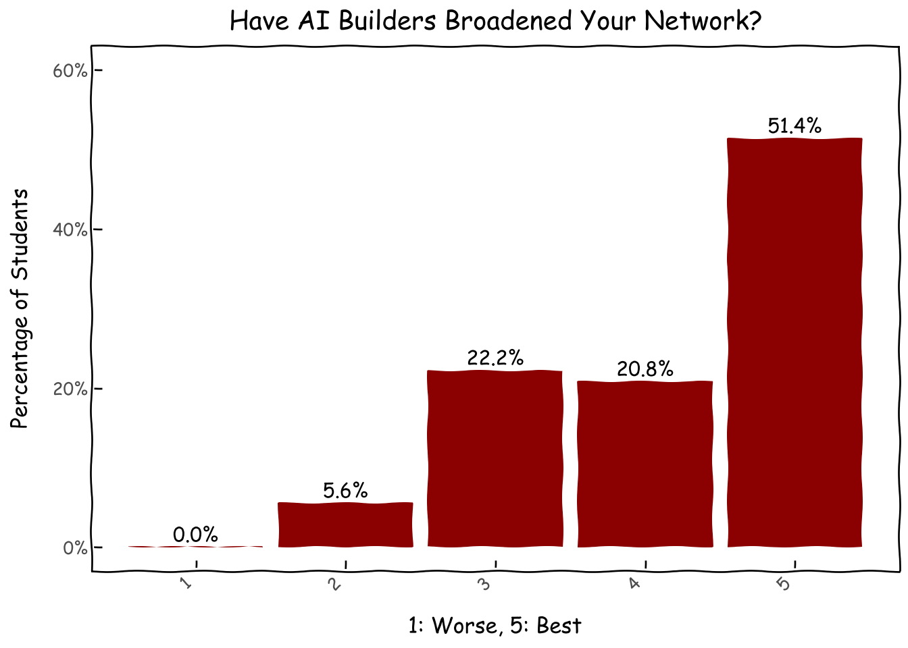
Activities Student Engage in After the Program
We asked about activities they have taken part after obtaining the skills in AI Builders in the following domains: school activity, hackathon, project competition, personal project, research, internship and work. Fortunately, most of the students have used what they learn to at least work on a personal project, which has always been our intention. About half of them have used it for events available to the middle-to-high school age group. And some even leapfrogged a bit to internship and work.
Code
usage_dict = {'กิจกรรมในโรงเรียน': 'School Activity', 'งานแข่ง Hackathon': 'Hackathon','ประกวดโครงงาน': 'Project Competition', 'โปรเจคต์ส่วนตัว': 'Personal Project','งานวิจัย': 'Research', 'การฝึกงาน': 'Internship', 'ทำงาน': 'Work', }for val in usage_dict.keys(): survey_df[usage_dict[val]] = survey_df.usage.fillna('unknown').map(lambda x: 1if (val in x) else0)usage_flags = [usage_dict[k] for k in usage_dict.keys()]d = survey_df[usage_flags].mean().reset_index().sort_values(0, ascending=False)d.columns = ['activity','proportion']d['activity'] = pd.Categorical(d['activity'], categories=d['activity'], ordered=True)g = (ggplot(d, aes(x='activity', y='proportion',label='proportion'))+ geom_col(fill='darkred')+ geom_text( nudge_y=0.0001, # Adjust this value to move labels slightly above the bars va='bottom', # Vertical alignment: 'bottom' places text just above the 'y' coordinate format_string='{:.1%}', )+ xlab('After-Program Activity') + ylab('Percentage of Students') + ggtitle('How Have You Applied What You Learned from AI Builders?')+ theme_xkcd()+ theme(axis_text_x=element_text(angle=45, hjust=1))+ scale_y_continuous(limits=(0,.9),labels=percent_format()) )g
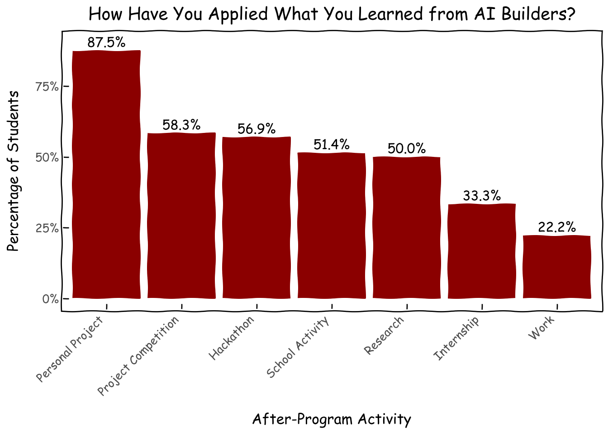
Looking a bit deeper, we can see that the median AI Builder engaged in about 3 after-program activity categories whereas some small percentage of seemingly superhuman alumni engage in all 7 categories.
Code
survey_df['nb_activity'] = survey_df[usage_flags].sum(axis=1)d = survey_df['nb_activity'].value_counts(normalize=True).reset_index()g = (ggplot(d, aes(x='nb_activity', y='proportion',label='proportion'))+ geom_col(fill='darkred')+ geom_text( nudge_y=0.0001, # Adjust this value to move labels slightly above the bars va='bottom', # Vertical alignment: 'bottom' places text just above the 'y' coordinate format_string='{:.1%}', )+ xlab('Number of After-Program Activities') + ylab('Percentage of Students') + ggtitle('How Many Activities Have You Applied What\nYou Learned from AI Builders to?')+ theme_xkcd()+ scale_y_continuous(limits=(0,.27),labels=percent_format())+ scale_x_continuous(breaks=[i for i inrange(8)],) )g
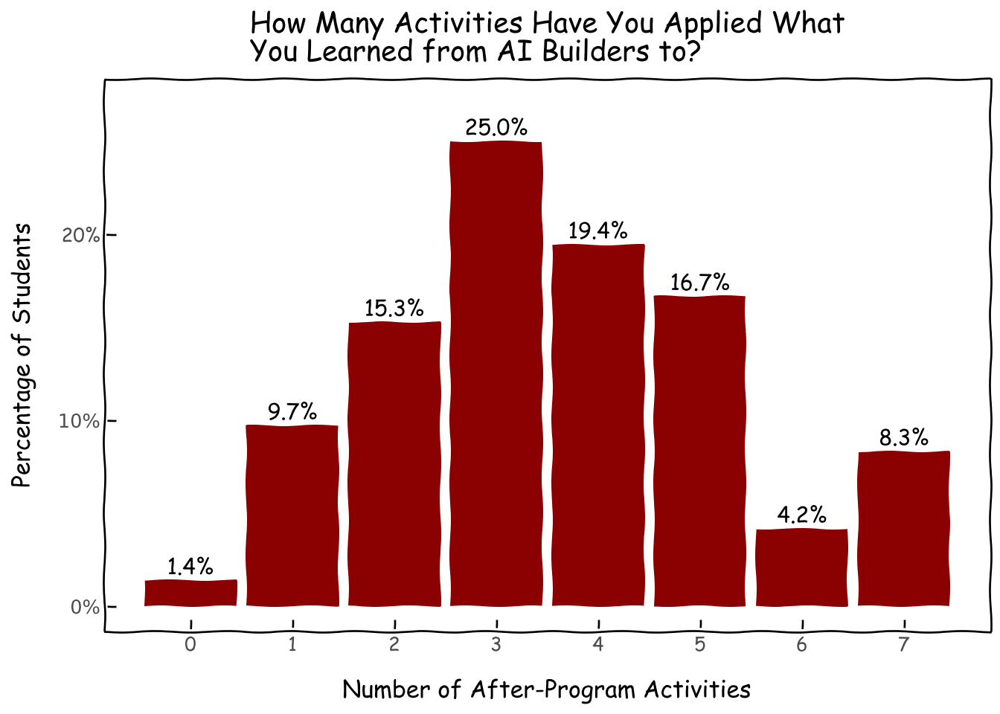
More on After-Program Activities
We had a few free-text questions for students to tell us about the details of their after-program activities in events, research and knowledge sharing. Here is a sampler of their achievements at domestic and international levels, which we hope we were at least a tiny part of:
After-Program Events
International Achievements:
• Silver Medal at Genius Olympiad 2024
• Breakthrough Pioneer Award at International Student Science Fair
• Finalist at nwHack (University of British Columbia)
• Excellence Award at Shanghai AI Global Innovation Competition
National Competitions:
• Multiple wins at Siriraj Hackathon (2022-2024)
• Gold Medal in Super AI Engineer
• First Prize in Computer Software Projects Competition (Sillapa70)
• Multiple awards in National Software Contest (NSC)
• AI/ML: Various projects involving computer vision, NLP, and machine learning
After-Program Research Works
Publications & Presentations:
• Published and presented at JCSSE2023, receiving Best Presentation Award
• Selected for poster presentation at EMBC 2025 in Denmark
• Authored paper on graph embedding methods for drug discovery
Academic Institutions:
• Research Assistant positions at:
Kasetsart University (Document Analysis)
VISTEC (Multiple EEG and PPG processing projects)
Brown University
University of Wisconsin-Madison (MRI processing)
Beijing Institute of Technology (Agent and Embodied Agent research)
Medical Research:
• Siriraj Hospital:
Cardiac Center research collaboration
VISTEC joint research project
Mr.Rehab medical consultant
Industry Collaboration:
• SCBX - AI Researcher Intern
• American Family Insurance - DS/ML Intern
• AI Singapore - Student Assistance (Quality Assurance)
Specialized Projects:
• Virtual Power Plant AI implementation with Walailak University
• Disaster Management System Development at Nakhon Ratchasima Rajabhat University
• Individual Study projects at Chulalongkorn University
Notable Scholarships:
• JSTP Scholarship 2024 Researcher
• พสวท. (DPST) Scholar
After-Program Knowledge Sharing
University Level Involvement:
• Teaching Assistant positions at:
Brown University (CSCI0410)
Kasetsart University (Machine Learning Systems)
Various Computer Programming courses
Secondary Education Impact:
• Organized and taught at multiple high school programs:
Comcamp36 (Data Science Fundamentals)
NSTDA’s RAC Program (AI & Data Science Camp)
Robotics workshops
Computer Olympics training
Community Initiatives:
• Founded and led technical clubs:
Information System Development club at Chulalongkorn University
KU Tech club activities
CU Dev Club workshops
Digital Content Creation:
• Created educational content:
YouTube channel for AI programming using Kittenblock
E-book: “AI & Machine Learning for Kids”
Event Organization:
• Hackathons and Workshops:
SI Hackathon 2023
I-Squared Hackathon (Data Science and ML)
ChAMP Data Career Track
Machine Learning in Computer Vision workshop (40 participants)
Technical Projects:
• Developed backend systems:
Registration and event management APIs
Pet adoption website backend
Various student-focused technical solutions
Mentorship:
• Provided guidance for:
Technology club members
Project competition participants
Career preparation in data science fields
School technology initiatives
Closing Remarks
By cross-tabulating the roster and survey, we have reaffirmed the effectiveness of our project-based learning approach, the advantage of the all-online format, and the growing community based on no-nonsense, impact-driven buildership. Looking forward, we will tackle our gap in lession (audio track), support for non-Bangkok students, and pipeline intake for biologically female students.
If you are an organization or a person that share our vision for building, please feel free to reach out for any kind of sponsorship, code contribution, mentorship, and moral support.
No influencers. No scammers. Just builders.
Appendiex
Student Location
Code
#bangkok vs non-bangkokgreater_bangkok = ['กรุงเทพมหานคร','นนทบุรี','นครปฐม','ปทุมธานี','สมุทรปราการ','สมุทรสาคร']roster_df['province_grouped'] = roster_df.province.map(lambda x: 'กรุงเทพฯและปริมณฑล'if x in greater_bangkok else x)roster_df['is_greater_bangkok'] = roster_df.province_grouped.map(lambda x: 1if x=='กรุงเทพฯและปริมณฑล'else0)d = roster_df.province_grouped.value_counts(normalize=True).reset_index()d